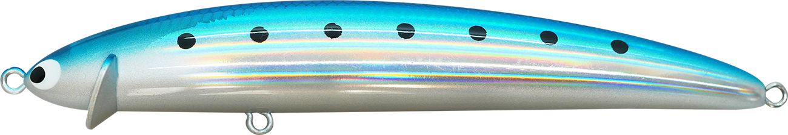
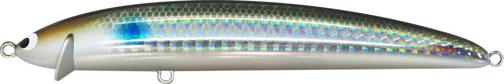
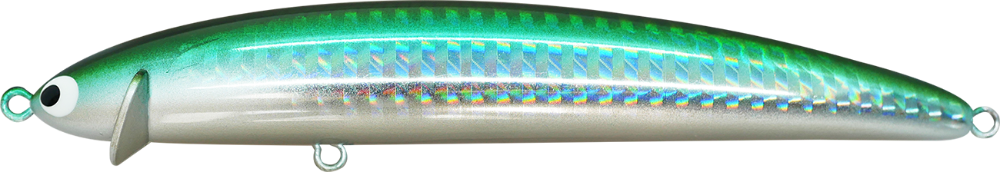
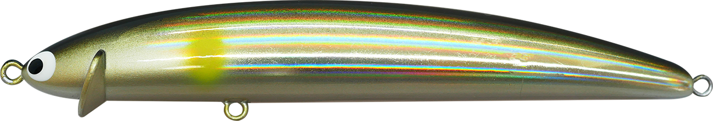
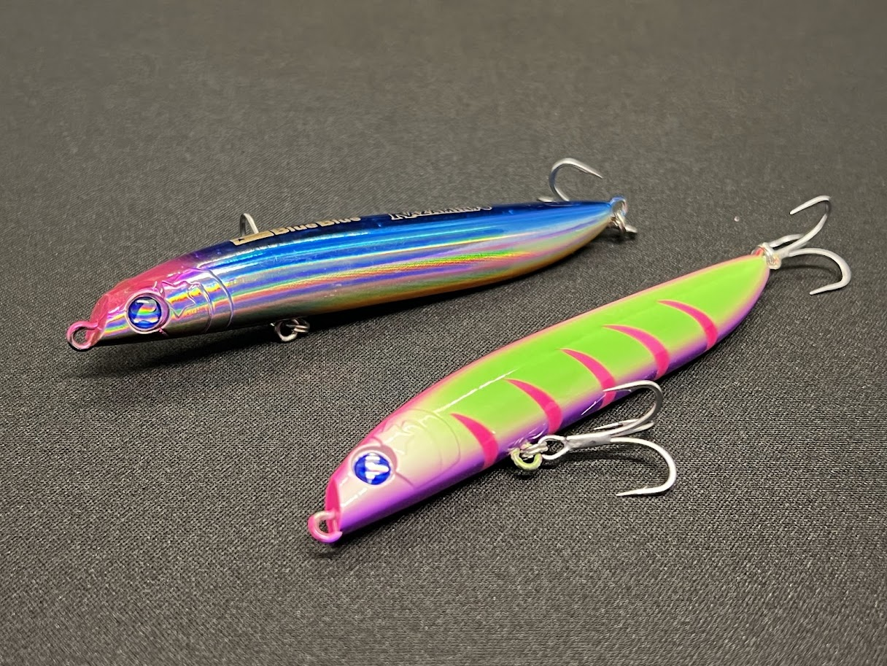

フリルドスイマー115F
（シャローランナーミノー）
フリルドスイマー115F（FRILLED SWIMMER 115F）はポジドライブガレージのシャローランナーミノーです。
特徴的な「エリマキリップ」は一般的なリップ＝潜行板ではなく、抵抗板としての発想。ロングリトリーブでも潜行深度の変化が極端に少なく、一定レンジをキープし続けられる「深度変化を嫌う、純然たるシャローランナー」です。

画像出典:ポジドライブガレージ公式HP
スペック
- メーカー
- ポジドライブガレージ
- タイプ
- フローティングミノー（シャローランナー）
- 全長
- 115mm
- 自重
- 16g
- フック
- #4×2
- リング
- #4
- レンジ
- 最大50cm
- ターゲット
- シーバス
- 価格
- 2,090円（税込）
▼今すぐチェック
フリルドスイマー115Fの特徴
「深度変化を嫌う」特殊リップが生む、純然たるシャローランナー性能
-
エリマキリップによる抵抗板構造で深度変化を抑制
一般的なミノーの「リップ＝潜行板」ではなく「エリマキ＝抵抗板」という発想。入力に対するブレーキ効果で、リトリーブの強弱によって深く潜り込みすぎない。
-
ロングリトリーブでも一定レンジをキープ
長い距離を巻いても潜行深度の変化が極端に少なく、狙ったレンジを通し続けられる。橋脚周りや河川のヨレなど、一定層をトレースしたい場面で強い。
-
最大50cmレンジの純粋なシャロー設計
スペック上のレンジは最大50cm。藻場・干潟・シャローフラットなど、深く潜らせたくない場面に照準を絞った設計。
フリルドスイマー115Fの使い方
基本はただ巻き。エリマキリップのブレーキ効果を活かし、リトリーブスピードを変えても潜行深度が大きく変わらない特性を利用して、狙ったレンジを丁寧にトレースするのが基本の使い方。
根掛かりを避けたい浅場やストラクチャー周りでも、深く入り込みすぎないため安心してテンポよく探れる。流れのあるポイントでは、流速に負けない程度のスピードでレンジをキープしながら通すと反応が出やすい。
フリルドスイマー115Fの得意な状況
藻場・干潟・シャローフラットなど、水深の浅いポイントで根掛かりを恐れずレンジをキープしたい状況が最大の出番。
河川のヨレや橋脚周りなど、一定レンジを長く通したいシーバスゲームにも強い。深度変化を抑えたい・浅場を広く探りたいという場面で選びたい1本です。
ワンポイント
流れの強いポイントでは、リトリーブ速度を一段上げるとレンジがより安定しやすくなります。
根が浅い場所では、あえてスローリトリーブでトレースすると、深度変化の少なさを活かして根掛かりを避けながらじっくり誘えます。
オススメカラー
フリルドスイマー115Fは全15色展開。ベイトパターンに合わせやすいオススメカラーを厳選して紹介します。
 イワシ
イワシ
定番のイワシパターン。マイクロベイトが接岸するタイミングで頼れる1色。

ボラボラの稚魚（イナッコ）パターンにマッチするカラー。河口・汽水域で有効。

とうごろうトウゴロウイワシパターン。シャローに群れる小型ベイトを演出できる。

アユ河川のアユパターン。落ちアユ・稚アユを意識したい状況で選びたい1色。
画像出典:ポジドライブガレージ公式HP
フリルドスイマー115Fに似ているルアー
-
 コスケ110F
ima
詳細はこちら＞
コスケ110F
ima
詳細はこちら＞
全長110mm・自重19gのフローティングミノー。サイズ感が近く、同じシーバス向けフローティングミノーとして持ち替えの候補になる1本。
-

ラザミン90 BlueBlue 詳細はこちら＞全長90mm・レンジ0-10cmのフローティングミノー。浅いレンジをキープする狙いどころがフリルドスイマー115Fと共通する。